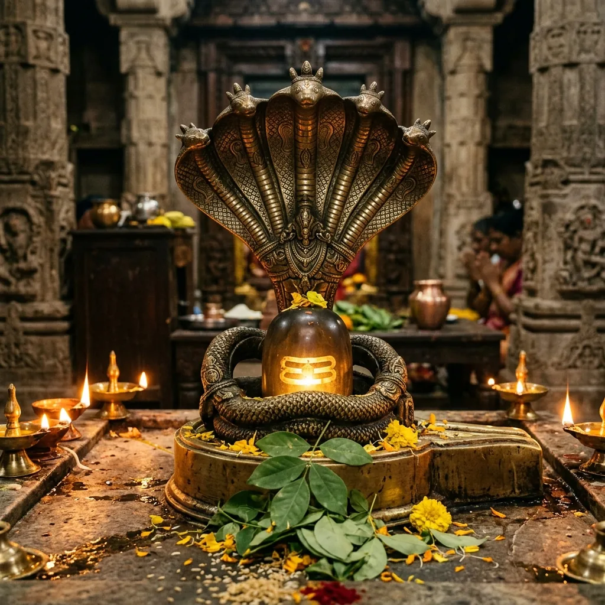

12 Types of Kalsarpa Dosh & Effective Vedic Remedies

Kalsarpa Dosh is one of the most feared and widely discussed astrological combinations in Vedic astrology. It occurs when all seven main planets — Sun, Moon, Mars, Mercury, Jupiter, Venus, and Saturn — are hemmed between the shadow planets Rahu (North Node) and Ketu (South Node) in the birth chart (Kundali). This alignment creates a powerful karmic imbalance that can affect nearly every major area of life, including career, health, relationships, finances, and mental peace.
Pandit Lakhan Sharma, a renowned Vedic astrologer at Siddh Peeth Nalkheda, Madhya Pradesh, has helped thousands of devotees across India and abroad diagnose and remedy Kalsarpa Dosh through authentic Vedic rituals and Rahu-Ketu Shanti pujas performed at sacred pilgrimage sites.
What Causes Kalsarpa Dosh?
According to Vedic astrology, Kalsarpa Dosh is primarily caused by karmic sins committed in previous births — especially harm caused to snakes, Nagas, or abandonment of parental duties. The serpent planets Rahu and Ketu trap all other planets between them, blocking the positive planetary energies and intensifying karmic lessons in the current life.
The effects of Kalsarpa Dosh can vary greatly depending on which of the 12 types is present, the houses involved, and the strength of the ruling planets in a person's horoscope.
All 12 Types of Kalsarpa Dosh — Explained
1. Anant Kalsarpa Dosh (1st–7th House)
Rahu is in the 1st house and Ketu in the 7th house. This dosh creates obstacles in marriage, partnerships, and self-identity. The native may experience delays in marriage, troubled relationships, and challenges in self-confidence and career beginnings.
2. Kulik Kalsarpa Dosh (2nd–8th House)
Rahu in 2nd house and Ketu in 8th house. This is considered one of the most severe forms. It can cause severe financial losses, family disputes, speech-related problems, accidents, and sudden health crises. Inheritance issues and hidden enemies are also common.
3. Vasuki Kalsarpa Dosh (3rd–9th House)
Rahu in 3rd house and Ketu in 9th house. Affects communication, siblings, courage, and fortune. Natives often struggle with career stability, religious beliefs, and may experience loss of luck despite hard work. Guru's blessings may be weak.
4. Shankhpal Kalsarpa Dosh (4th–10th House)
Rahu in 4th house and Ketu in 10th house. This dosh disturbs home life, relationship with mother, property matters, and professional reputation. Sudden rises and falls in career are characteristic of this type.
5. Padma Kalsarpa Dosh (5th–11th House)
Rahu in 5th house and Ketu in 11th house. Creates challenges in education, progeny (children), speculative investments, and social networks. Natives may experience repeated failures in exams or difficulty conceiving children.
6. Mahapadma Kalsarpa Dosh (6th–12th House)
Rahu in 6th house and Ketu in 12th house. Affects health, enemies, debts, and spiritual liberation. Can cause chronic illness, prolonged legal battles, and heavy expenditure. However, it can also bring spiritual awakening.
7. Takshak Kalsarpa Dosh (7th–1st House)
Rahu in 7th house and Ketu in 1st house. Causes problems in marriage, business partnerships, and self-development. Legal disputes with spouse or business partners are common. Divorce and separation risks are elevated.
8. Karkotak Kalsarpa Dosh (8th–2nd House)
Rahu in 8th house and Ketu in 2nd house. This dosh creates fears, mysteries, occult entanglements, sudden wealth loss, and family financial crises. The native may suffer from chronic diseases and fear of death.
9. Shankhnaad Kalsarpa Dosh (9th–3rd House)
Rahu in 9th house and Ketu in 3rd house. Affects father-son relationships, religious inclination, and higher education. The native may feel spiritually lost and struggle with dharmic duties and moral conflicts.
10. Patak Kalsarpa Dosh (10th–4th House)
Rahu in 10th house and Ketu in 4th house. Impacts career, social status, and domestic peace. Despite professional achievements, personal life remains turbulent. Loss of reputation or sudden career downfall is common.
11. Vishadhar Kalsarpa Dosh (11th–5th House)
Rahu in 11th house and Ketu in 5th house. Creates obstacles in income, social circle, and children. The native may gain wealth suddenly only to lose it again. Speculative losses and betrayal from friends are typical.
12. Sheshnag Kalsarpa Dosh (12th–6th House)
Rahu in 12th house and Ketu in 6th house. This is considered the mildest form but still causes foreign settlement challenges, secret enemies, excessive expenditure, and spiritual confusion. Health issues related to feet and eyes are common.
Symptoms & Effects of Kalsarpa Dosh
- Recurring dreams of snakes, water, or ancestors
- Constant feeling of fear, anxiety, or depression without apparent reason
- Repeated failures despite hard work and sincere effort
- Sudden financial losses or unexpected debt accumulation
- Delays in marriage, job, or childbirth
- Strained family relationships and frequent disputes
- Unexplained health problems that persist despite medical treatment
- Feeling of being trapped or unable to progress in life
Vedic Remedies for Kalsarpa Dosh
Pandit Lakhan Sharma recommends the following authentic Vedic remedies based on the specific type and severity of Kalsarpa Dosh identified in the horoscope:
1. Kalsarpa Dosh Nivaran Puja at Ujjain / Nalkheda
Performing the Kalsarpa Shanti Puja at Mahakaleshwar Ujjain or Siddh Peeth Nalkheda is considered the most powerful remedy. The puja involves Rahu-Ketu Shanti, Nagbali ritual, Nag Panchami offerings, and recitation of Maha Mrityunjaya mantra 1,08,000 times.
2. Nagbali Puja
This ritual is performed specifically to liberate the souls of snakes harmed in previous lives. Nagbali puja neutralizes the karmic root cause of Kalsarpa Dosh and brings lasting relief from its negative effects.
3. Rahu-Ketu Shanti Homam
A sacred fire ritual (havan) performed with specific herbs, sesame seeds, and blue/black offerings to pacify Rahu, combined with white offerings for Ketu. This homam can be performed at home or at a temple under the guidance of an expert priest.
4. Daily Mantra Chanting
Reciting the Rahu Beej Mantra "Om Bhram Bhreem Bhraum Sah Rahave Namah" (18,000 times) and Ketu Beej Mantra "Om Sram Sreem Sraum Sah Ketave Namah" regularly helps reduce the malefic influence of both shadow planets.
5. Mahamrityunjaya Japa
Chanting the Mahamrityunjaya mantra 1,25,000 times (Purashcharan) with proper Sankalp is a highly effective remedy that brings divine protection and removes Kalsarpa Dosh effects over time.
6. Gemstone Therapy
Wearing Hessonite (Gomed) for Rahu and Cat's Eye (Lehsunia) for Ketu after proper horoscope analysis can help balance the energies. However, gemstones should only be worn after expert consultation as incorrect usage can worsen conditions.
🙏 Book Your Kalsarpa Dosh Puja
Pandit Lakhan Sharma performs authentic Kalsarpa Dosh Nivaran Puja at Nalkheda and Ujjain with complete Sankalp Vidhi. Online puja also available with video updates and Prasad delivery.
How Long Does It Take to See Results?
The results of Kalsarpa Dosh remedies depend on the type and intensity of the dosh, the sincerity of the devotee, and the accuracy of the remedy performed. Generally:
- Minor Kalsarpa Dosh: Relief within 40-90 days of proper remedy
- Moderate Dosh: 3-6 months of sustained remedial practices
- Severe or rare types: May require repeat annual pujas and sustained mantra japa
Pandit Lakhan Sharma provides personalized follow-up guidance to all devotees who book through his services, ensuring the remedies are performed correctly and adjustments are made as needed.
Why Choose Pandit Lakhan Sharma for Kalsarpa Dosh Remedy?
- 15+ years of experience in Vedic astrology and ritual sciences
- Performed Kalsarpa Puja for 5,000+ devotees across India and abroad
- Authentic rituals at Siddh Peeth Nalkheda and Mahakaleshwar Ujjain
- Online puja available with live video streaming and Prasad delivery
- Personalized Kundali analysis before recommending specific remedy
- Transparent fee structure with no hidden charges
Frequently Asked Questions (FAQ)
Is Kalsarpa Dosh present in every horoscope?
No. Kalsarpa Dosh only forms when all 7 main planets are trapped between Rahu and Ketu. If even one planet is outside this axis, the dosh does not apply. A proper Kundali analysis by an experienced astrologer is needed to confirm its presence.
Can Kalsarpa Dosh be completely removed?
While it cannot be removed from the birth chart permanently, its negative effects can be significantly reduced through authentic Vedic remedies. Many people with Kalsarpa Dosh go on to achieve great success after proper remediation.
What is the best place to perform Kalsarpa Puja?
Mahakaleshwar Ujjain, Trimbakeshwar Nashik, and Siddh Peeth Nalkheda are considered the most sacred and powerful places for Kalsarpa Dosh Nivaran Puja in India.
Can I perform Kalsarpa Puja online?
Yes! Pandit Lakhan Sharma conducts online Kalsarpa Dosh Puja with proper Sankalp (personal vow) taken in your name, live video streaming of the ritual, and home delivery of blessed Prasad.
Is Kalsarpa Dosh always negative?
Not necessarily. Some of the world's most successful people have Kalsarpa Dosh in their charts. The dosh can also give extraordinary focus, spiritual power, and worldly success if the planets are well-placed. The key is proper analysis and remediation of only the genuinely harmful aspects.